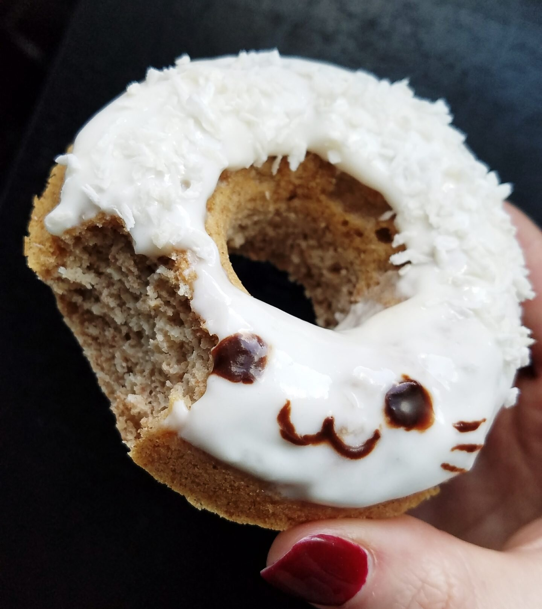
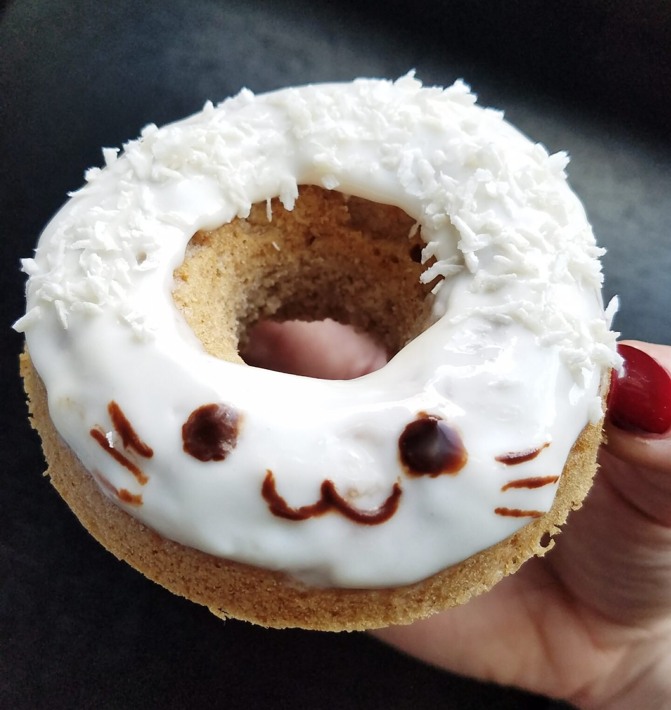

The Fluffiest Vegan Coconut Donut (gf)


How cute and happy is this vegan coconut donut, especially for having its face devoured? This baked cake donut can be enjoyed guilt-free. It is entirely vegan, sugar free, oil free, and can be made gluten free!
I decided to make this baked cake coconut donut after recently visiting a local donut shop in Atlanta, and craving them still. If anyone is in the area, have you been to Revolution Donuts? It was my first time going this month, aaaand...I've now been twice in two weeks. I find that funny because I've never been a donut person. Even during my overweight, teen years...I just. Meh. The smell and grease just always has been off-putting to me. That repulsion just got worse during my orthorexia time since I was used to plain vegetables. I remember a college professor bringing in dozens and dozens of donuts for our 200+ student lecture class, and almost throwing up from the smell. Literally. So I come back to say...I've never been a donut person. But now I find that once I get over the smell and start eating one...it's good!! The last donut I had was over a year ago in Portland at Voo-Doo Donuts and it was just okay. But these donuts...at Revolution...changed something within me. I feel enlightened.
I initially wanted to go because I saw they had some vegan choices online. But walking in, I realized they have an almost entirely vegan menu! It's amazing. That first visit, 12 of the 13 flavor options on display were vegan. My initial reaction was "oh god oh god how can I choose just 1 or 2?!?!" Nick's response - "get a dozen." Well then. That's a simple fix, considering there's exactly a dozen vegan donut flavors. You don't have to tell me twice. I'm spoiled.
One of my favorites from those donuts was a moist, fluffy coconut baked donut. So I decided to recreate my own, healthy version. I am happy. I decided to decorate it as a coconut kitty because...me. In a nutshell. This vegan coconut donut is fluffy, moist, and sugar free! There are no oils used either. Enjoy!
The Fluffiest Vegan Coconut Donut
Serves: 1
Donut Batter
-
1/4 cup spelt flour (or oat flour or buckwheat flour if gluten free)
-
1 TBSP almond flour
-
3/4 tsp baking powder
-
5-7 coconut liquid stevia drops
-
1/4-1/3 cup almond milk
Icing
-
vanilla soy yogurt
-
2-3 coconut liquid stevia drops
-
shredded coconut
First, mix the dry batter ingredients (spelt flour, almond flour, and baking powder). Then slowly add the almond milk while mixing until a batter consistency forms. Once thick, add the coconut stevia drops and mix. Pour the batter into the mold of a donut tray and bake at 350F for 16-18 minutes.
Make the icing by mixing the soy yogurt and coconut drops. Ice your donut, then top with shredded coconut. Enjoy!